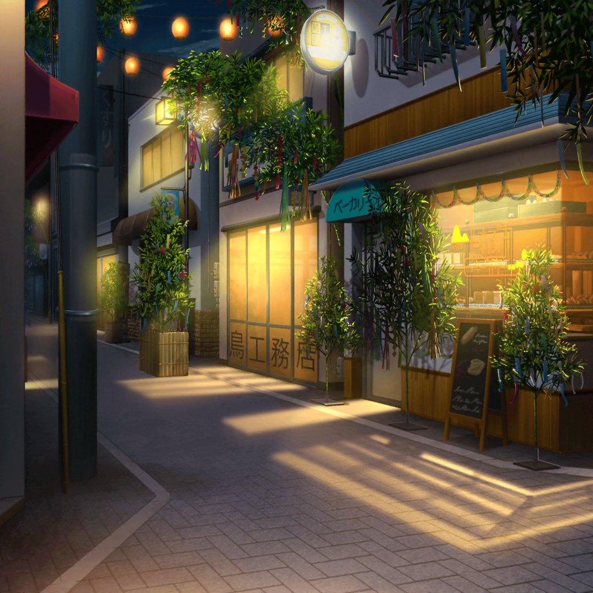

商店街
日菜
んーっ、あったかくておいしー♪
紗夜
日菜、こぼさないように気をつけなさい
日菜
だいじょーぶっ！
紗夜
そういえば、短冊は飾らなくていいの？
日菜
あ、そっか！
忘れてた！
紗夜
はあ……それじゃあ、あんなに走ったのは
なんだったのよ
日菜
えへへ。ごめんごめん！
ねえ、せっかくだからおねーちゃんも短冊、書いたら？
紗夜
私は別に……
日菜
いーじゃん、いーじゃん！
ほら、あそこに書くスペースあるよ！
日菜
あたしはその間に飾ってくるからっ！
紗夜
日菜！
……はあ……
紗夜
（願い事なんて……思いつかない……）
日菜
どのへんに飾ろうかなーっ！
あたしのお願いごと♪
日菜
……あっ
紗夜
（ギターが上達しますように？
バンドが成功しますように？ ……何か違う）
紗夜
（……そうだ）
日菜
おねーちゃん、短冊書けた？
紗夜
ええ。もう飾ったわ
日菜
えっ、どれどれ？
紗夜
日菜に見つからないような場所に飾ったわ。
日菜も飾れたの？
日菜
あたしはね……飾らなかった
紗夜
えっ、どうして？
日菜
あたしのお願い……もう叶っちゃったから♪
えへへ
紗夜
？ どういうこと？
日菜
短冊にね、『おねーちゃんと仲良く過ごせますように』って
書いたんだ。そうしたら、今日、叶っちゃった
紗夜
日菜……！
日菜
やっぱり今日って、すっごくいい日だよ♪
だからきっと、おねーちゃんが書いたお願いごとも叶うよ！
紗夜
ええ、そうね……
いつか……私の願いごとも叶う気がするわ
紗夜
（『日菜とまっすぐ話せますように』。
きっといつか……叶えられたら――）

翌日
羽丘女子学園 2-A
日菜
ふんふーん！
リサちー、おっはよー♪
リサ
ヒナ！ おはよ♪
先週と違って、ずいぶんゴキゲンじゃん？
日菜
うんっ！
七夕祭り、おねーちゃんと一緒に行けたんだ
リサ
そうなんだ！ よかったじゃん、ヒナ！
日菜
色々あったんだけどね、すっごく楽しかったんだ♪
リサ
それで、紗夜とはいろいろ話せた？
日菜
うん！ おねーちゃん、最初はいつもみたいに
難しい顔してたんだけど……最後には笑ってくれて
日菜
おねーちゃんが笑った顔って、久しぶりに見たから。
すっごく嬉しかったなあ……
リサ
ヒナ……
日菜
来年もまた、一緒に行けたらなって思ってるの！
だから、来年の七夕祭りの日、あけといてって
言ったら……
日菜
『そんなに先のこと、わからないよ』って
言われちゃった
リサ
あっはは！ 紗夜の言うとおり！
けど、きっと紗夜は予定あけといてくれると思うな
日菜
そうかな？ そう思う？
リサ
うん！
……あ、それじゃあ来年の七夕も、Roseliaの練習は
お休みにしとかないとね？
リサ
友希那、それでいいって言ってくれるかな〜？
今年はたまたま休みだったけど、来年はな〜……
日菜
えー！ お願いっ！
なんとかして、リサちー！